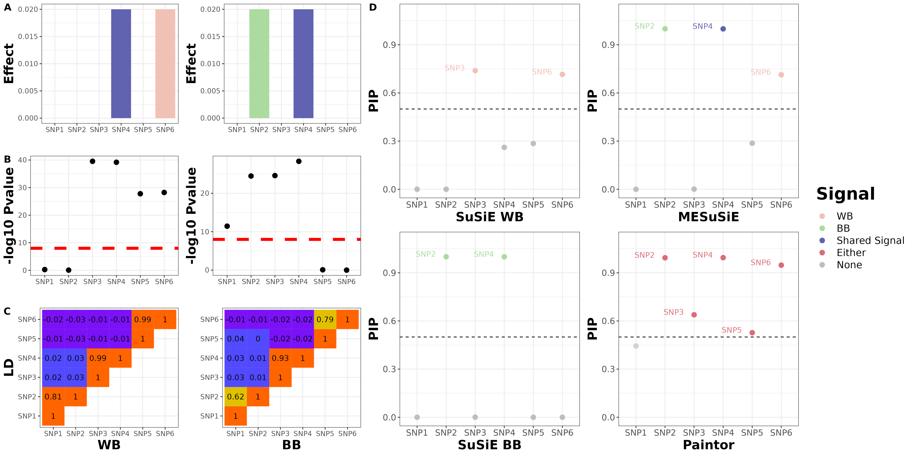

Last updated: 2022-11-09
Checks: 7 0
Knit directory: meSuSie_Analysis/
This reproducible R Markdown analysis was created with workflowr (version 1.7.0). The Checks tab describes the reproducibility checks that were applied when the results were created. The Past versions tab lists the development history.
Great! Since the R Markdown file has been committed to the Git repository, you know the exact version of the code that produced these results.
Great job! The global environment was empty. Objects defined in the global environment can affect the analysis in your R Markdown file in unknown ways. For reproduciblity it’s best to always run the code in an empty environment.
The command set.seed(20220530) was run prior to running
the code in the R Markdown file. Setting a seed ensures that any results
that rely on randomness, e.g. subsampling or permutations, are
reproducible.
Great job! Recording the operating system, R version, and package versions is critical for reproducibility.
Nice! There were no cached chunks for this analysis, so you can be confident that you successfully produced the results during this run.
Great job! Using relative paths to the files within your workflowr project makes it easier to run your code on other machines.
Great! You are using Git for version control. Tracking code development and connecting the code version to the results is critical for reproducibility.
The results in this page were generated with repository version 65fba54. See the Past versions tab to see a history of the changes made to the R Markdown and HTML files.
Note that you need to be careful to ensure that all relevant files for
the analysis have been committed to Git prior to generating the results
(you can use wflow_publish or
wflow_git_commit). workflowr only checks the R Markdown
file, but you know if there are other scripts or data files that it
depends on. Below is the status of the Git repository when the results
were generated:
working directory clean
Note that any generated files, e.g. HTML, png, CSS, etc., are not included in this status report because it is ok for generated content to have uncommitted changes.
These are the previous versions of the repository in which changes were
made to the R Markdown (analysis/installation.Rmd) and HTML
(docs/installation.html) files. If you’ve configured a
remote Git repository (see ?wflow_git_remote), click on the
hyperlinks in the table below to view the files as they were in that
past version.
| File | Version | Author | Date | Message |
|---|---|---|---|---|
| Rmd | 65fba54 | borangao | 2022-11-09 | Build site. |
| html | 65fba54 | borangao | 2022-11-09 | Build site. |
library(devtools)
# Install MESuSiE
install_github("borangao/MESuSiE")
# Load MESuSiE
library(MESuSiE)
library(progress)We will give the illustration example with the toy example data in the manuscript. For this toy example, we focused on six SNPs that belong to three distinct LD clusters in the region, with SNP 1/2, 3/4 and 5/6 in each cluster respectively, and with high SNP correlations within each cluster and weak SNP correlations between clusters. We set SNP 4 as the shared causal SNP and set SNPs 2 and 6 as the BB and WB-specific causal SNPs, respectively.
library(data.table)
library(snpStats)
geno_dir<-paste0("/net/fantasia/home/borang/Genotype/Fig1/")
WB_plink<-read.plink(paste0(geno_dir,"WB.bed"))
BB_plink<-read.plink(paste0(geno_dir,"BB.bed"))
WB_plink_geno<-as(WB_plink$genotypes,"numeric")
WB_plink_geno<-apply(WB_plink_geno,2,function(x){
x[is.na(x)]=mean(x,na.rm=T)
x = scale(x)
return(x)
})
BB_plink_geno<-as(BB_plink$genotypes,"numeric")
BB_plink_geno<-apply(BB_plink_geno,2,function(x){
x[is.na(x)]=mean(x,na.rm=T)
x = scale(x)
return(x)
})
BB_plink_geno[,BB_plink$map$allele.1!=WB_plink$map$allele.1]<-1*BB_plink_geno[,BB_plink$map$allele.1!=WB_plink$map$allele.1]
WB_plink_geno<-WB_plink_geno[,c(3,4,1,2,5,6)]
BB_plink_geno<-BB_plink_geno[,c(3,4,1,2,5,6)]
WB_cov<-cov2cor(crossprod(WB_plink_geno))
BB_cov<-cov2cor(crossprod(BB_plink_geno))
colnames(WB_cov)<-paste0("SNP",seq(1,6,1))
colnames(BB_cov)<-paste0("SNP",seq(1,6,1))
colnames(WB_plink_geno)<-paste0("SNP",seq(1,6,1))
colnames(BB_plink_geno)<-paste0("SNP",seq(1,6,1))
causal_snp_list_1<-c("SNP2","SNP4")
causal_snp_list_2<-c("SNP4","SNP6")
num_causal_SNP=2
library(mvtnorm)
WB_plink_causal<-matrix(WB_plink_geno[colnames(WB_plink_geno)%in%causal_snp_list_1],ncol=num_causal_SNP)
BB_plink_causal<-matrix(BB_plink_geno[colnames(BB_plink_geno)%in%causal_snp_list_2],ncol=num_causal_SNP)
beta_BB<-c(0.02,0.02)
beta_BB_all<-rep(0,ncol(BB_cov))
beta_BB_all[which(colnames(BB_cov)%in%causal_snp_list_1)]<-beta_BB
beta_BB_marginal<-BB_cov%*%beta_BB_all
beta_WB<-c(0.02,0.02)
beta_WB_all<-rep(0,ncol(WB_cov))
beta_WB_all[which(colnames(WB_cov)%in%causal_snp_list_2)]<-beta_WB
beta_WB_marginal<-WB_cov%*%beta_WB_all
set.seed(881130)
y_null_WB<-rnorm(nrow(WB_plink_geno),0,sqrt(1-var(WB_cov%*%beta_WB_all)))
y_null_WB<-y_null_WB-mean(y_null_WB)
y_null_BB<-rnorm(nrow(BB_plink_geno),0,sqrt(1-var(BB_cov%*%beta_BB_all)))
y_null_BB<-y_null_BB-mean(y_null_BB)
err_beta_WB<-t(WB_plink_geno)%*%y_null_WB/nrow(WB_plink_geno)
err_beta_BB<-t(BB_plink_geno)%*%y_null_BB/nrow(BB_plink_geno)
target_WB_N<-300000
target_BB_N<-300000
err_beta_WB_scale<-sqrt(nrow(WB_plink_geno)/target_WB_N)*err_beta_WB
err_beta_BB_scale<-sqrt(nrow(BB_plink_geno)/target_BB_N)*err_beta_BB
z_WB<-(beta_WB_marginal+err_beta_WB_scale)*sqrt(target_WB_N)
z_BB<-(beta_BB_marginal+err_beta_BB_scale)*sqrt(target_BB_N)
R_mat_list=list("WB" = WB_cov,"BB" = BB_cov)
summary_stat_1 = data.frame("SNP" = colnames(WB_cov), "Beta"=beta_WB_marginal+err_beta_WB_scale,"Se"=1/sqrt(target_WB_N), "Z" =z_WB, "N" =target_WB_N )
summary_stat_2 = data.frame("SNP" = colnames(WB_cov), "Beta"=beta_BB_marginal+err_beta_BB_scale,"Se"=1/sqrt(target_BB_N), "Z" =z_BB, "N" =target_BB_N )
summary_stat_sd_list = list("WB" = summary_stat_1,"BB"=summary_stat_2 )
save(R_mat_list,summary_stat_sd_list,file="/net/fantasia/home/borang/Genotype/Fig1/Fig1.RData")For the input of the MESuSiE, we require a list of summary statistics and a list of LD matrices from multiple ancestries.
load("/net/fantasia/home/borang/Genotype/Fig1/Fig1.RData")
summary_stat_sd_list$WB
SNP Beta Se Z N
rs74063479 SNP1 0.0011203766 0.001825742 0.6136555 3e+05
rs113274765 SNP2 -0.0003569601 0.001825742 -0.1955151 3e+05
rs3122053 SNP3 0.0242512526 0.001825742 13.2829581 3e+05
rs3120831 SNP4 0.0241407370 0.001825742 13.2224262 3e+05
rs3008244 SNP5 0.0202160136 0.001825742 11.0727667 3e+05
rs3008245 SNP6 0.0203888545 0.001825742 11.1674355 3e+05
$BB
SNP Beta Se Z N
rs74063479 SNP1 1.268663e-02 0.001825742 6.948755612 3e+05
rs113274765 SNP2 1.894104e-02 0.001825742 10.374434488 3e+05
rs3122053 SNP3 1.898423e-02 0.001825742 10.398090252 3e+05
rs3120831 SNP4 2.042313e-02 0.001825742 11.186207445 3e+05
rs3008244 SNP5 4.181805e-04 0.001825742 0.229046904 3e+05
rs3008245 SNP6 -3.255630e-06 0.001825742 -0.001783182 3e+05Each element of the summary statistics list is a data frame of summary statistics from each ancestry with column name SNP, Beta, Se, Z, and N representing SNP information, marginal effect size, standard error, Z-scores and number of sample.
R_mat_list$WB
SNP1 SNP2 SNP3 SNP4 SNP5
rs74063479 1.00000000 0.81316429 0.015852174 0.016549732 -0.012114127
rs113274765 0.81316429 1.00000000 0.034865906 0.034644305 -0.025684319
rs3122053 0.01585217 0.03486591 1.000000000 0.991905807 -0.008160074
rs3120831 0.01654973 0.03464431 0.991905807 1.000000000 -0.006572290
rs3008244 -0.01211413 -0.02568432 -0.008160074 -0.006572290 1.000000000
rs3008245 -0.01577946 -0.02880859 -0.007275435 -0.005639669 0.994683718
SNP6
rs74063479 -0.015779459
rs113274765 -0.028808589
rs3122053 -0.007275435
rs3120831 -0.005639669
rs3008244 0.994683718
rs3008245 1.000000000
$BB
SNP1 SNP2 SNP3 SNP4 SNP5
rs74063479 1.000000000 0.617458533 0.026597026 0.02800391 0.038078871
rs113274765 0.617458533 1.000000000 0.007373416 0.01196394 0.004909298
rs3122053 0.026597026 0.007373416 1.000000000 0.93120429 -0.015361016
rs3120831 0.028003907 0.011963936 0.931204295 1.00000000 -0.019027855
rs3008244 0.038078871 0.004909298 -0.015361016 -0.01902785 1.000000000
rs3008245 -0.005648862 -0.012302170 -0.019180081 -0.02335316 0.792099091
SNP6
rs74063479 -0.005648862
rs113274765 -0.012302170
rs3122053 -0.019180081
rs3120831 -0.023353156
rs3008244 0.792099091
rs3008245 1.000000000Each element of the LD matrices list is a matrix of LD from each ancestry, with column name being SNP name matched up with the summary statistics.
MESuSiE_test<-meSuSie_core(R_mat_list,summary_stat_sd_list,L=10)*************************************************************
Multiple Ancestry Sum of Single Effect Model (MESuSiE)
Visit http://www.xzlab.org/software.html For Update
(C) 2022 Boran Gao, Xiang Zhou
GNU General Public License
*************************************************************
# Start data processing for sufficient statistics
# Create MESuSiE object
# Start data analysis
# Data analysis is done, and now generates result
Potential causal SNPs with PIP > 0.5: SNP2 SNP4 SNP6
Credible sets for effects:
$cs
$cs$L1
[1] 4
$cs$L3
[1] 2
$cs$L2
[1] 5 6
$purity
min.abs.corr mean.abs.corr median.abs.corr
L1 1.0000000 1.0000000 1.0000000
L3 1.0000000 1.0000000 1.0000000
L2 0.9946837 0.9973419 0.9973419
$cs_index
[1] 1 3 2
$coverage
[1] 0.9991265 1.0000000 1.0000000
$requested_coverage
[1] 0.95
Use meSusie_plot_pip() for Mahattan and PIP Plot
# Total time used for the analysis: 0 minscolnames(MESuSiE_test$pip_config)<-c("PIP_WB","PIP_BB","PIP_Shared")
rownames(MESuSiE_test$pip_config)<-paste0("SNP",seq(1,6))
MESuSiE_test$pip_config PIP_WB PIP_BB PIP_Shared
SNP1 0.07142857 0.07142857 0.02380952
SNP2 0.07142857 0.73887144 0.26112856
SNP3 0.07142857 0.07142857 0.02380952
SNP4 0.07142857 0.07142857 0.99912652
SNP5 0.21516027 0.07142857 0.07171547
SNP6 0.53485169 0.07142857 0.17827258We can see that there are 3 SNPs that reaching posterior inclusion probability (PIP) cutoff 0.5. We further check the PIP of SNP being ancestry-specific and shared, and found that SNP4 being shared, SNP2 and SNP6 being ancestry-specific
library(susieR)
susie_WB<-susie_rss(summary_stat_sd_list$WB$Z,R_mat_list$WB)
susie_BB<-susie_rss(summary_stat_sd_list$BB$Z,R_mat_list$BB)
susie_WB$pip SNP1 SNP2 SNP3 SNP4 SNP5 SNP6
0.0000000 0.0000000 0.7392022 0.2607978 0.2847549 0.7152451 susie_BB$pip SNP1 SNP2 SNP3 SNP4 SNP5 SNP6
8.326673e-14 1.000000e+00 3.836731e-04 9.996163e-01 0.000000e+00 0.000000e+00 We further run the univariate SuSiE, and found that SNP 3 and 6 being European-specific signals, SNP 2 and 4 being African-specific signal with a PIP cutoff 0.5
##We load the Paintor result directly
paintor_post<-read.table(paste0("/net/fantasia/home/borang/Genotype/Fig1/result/fig1.mcmc.paintor"),header=T)
paintor_post CHR POS RSID zscore_1 zscore_2 Posterior_Prob
1 1 25868115 SNP1 -0.4771679 5.49760644 0.456068
2 1 25899926 SNP2 -0.7226137 6.23662118 0.994460
3 1 25811488 SNP3 5.2582050 7.19895385 0.642364
4 1 25856720 SNP4 5.2437257 7.79872412 0.993988
5 1 25943096 SNP5 6.1736746 0.49037982 0.534416
6 1 25952065 SNP6 6.6161982 0.02027758 0.950876Paintor identifies SNP2-5 as signals without distinguishing ancestry-specific or shared causal variant.

sessionInfo()R version 4.2.2 (2022-10-31)
Platform: x86_64-pc-linux-gnu (64-bit)
Running under: Ubuntu 18.04.6 LTS
Matrix products: default
BLAS: /usr/lib/x86_64-linux-gnu/openblas/libblas.so.3
LAPACK: /usr/lib/x86_64-linux-gnu/libopenblasp-r0.2.20.so
locale:
[1] LC_CTYPE=en_US.UTF-8 LC_NUMERIC=C
[3] LC_TIME=en_US.UTF-8 LC_COLLATE=en_US.UTF-8
[5] LC_MONETARY=en_US.UTF-8 LC_MESSAGES=en_US.UTF-8
[7] LC_PAPER=en_US.UTF-8 LC_NAME=C
[9] LC_ADDRESS=C LC_TELEPHONE=C
[11] LC_MEASUREMENT=en_US.UTF-8 LC_IDENTIFICATION=C
attached base packages:
[1] stats graphics grDevices utils datasets methods base
other attached packages:
[1] susieR_0.11.84 mvtnorm_1.1-3 snpStats_1.46.0 Matrix_1.4-1
[5] survival_3.3-1 data.table_1.14.2 progress_1.2.2 MESuSiE_1.0
[9] devtools_2.4.3 usethis_2.1.5 workflowr_1.7.0
loaded via a namespace (and not attached):
[1] httr_1.4.3 sass_0.4.1 pkgload_1.3.1
[4] jsonlite_1.8.3 splines_4.2.2 bslib_0.3.1
[7] assertthat_0.2.1 getPass_0.2-2 mixsqp_0.3-43
[10] yaml_2.3.5 remotes_2.4.2 sessioninfo_1.2.2
[13] pillar_1.8.1 lattice_0.20-45 glue_1.6.2
[16] digest_0.6.30 promises_1.2.0.1 colorspace_2.0-3
[19] plyr_1.8.7 htmltools_0.5.2 httpuv_1.6.5
[22] pkgconfig_2.0.3 zlibbioc_1.42.0 purrr_0.3.4
[25] scales_1.2.1 processx_3.8.0 whisker_0.4
[28] later_1.3.0 git2r_0.30.1 tibble_3.1.7
[31] generics_0.1.2 ggplot2_3.3.6 ellipsis_0.3.2
[34] cachem_1.0.6 BiocGenerics_0.42.0 cli_3.4.1
[37] magrittr_2.0.3 crayon_1.5.2 memoise_2.0.1
[40] evaluate_0.18 ps_1.7.2 fs_1.5.2
[43] fansi_1.0.3 pkgbuild_1.3.1 RcppZiggurat_0.1.6
[46] tools_4.2.2 prettyunits_1.1.1 hms_1.1.2
[49] lifecycle_1.0.3 matrixStats_0.62.0 stringr_1.4.0
[52] munsell_0.5.0 irlba_2.3.5 callr_3.7.3
[55] Rfast_2.0.6 compiler_4.2.2 jquerylib_0.1.4
[58] rlang_1.0.6 grid_4.2.2 rstudioapi_0.13
[61] rmarkdown_2.14 gtable_0.3.1 reshape_0.8.9
[64] DBI_1.1.2 curl_4.3.2 R6_2.5.1
[67] knitr_1.39 dplyr_1.0.9 fastmap_1.1.0
[70] utf8_1.2.2 rprojroot_2.0.3 stringi_1.7.6
[73] parallel_4.2.2 Rcpp_1.0.8.3 vctrs_0.5.0
[76] tidyselect_1.1.2 xfun_0.31